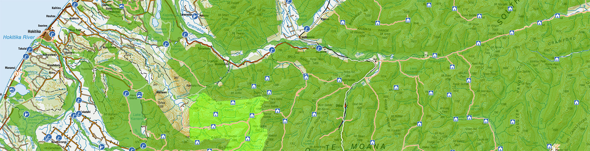
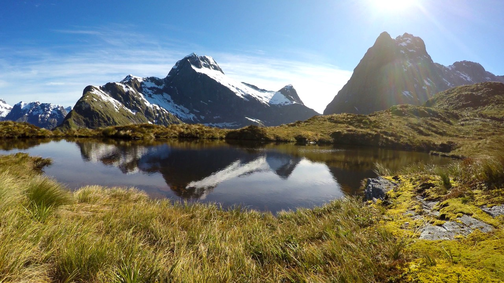
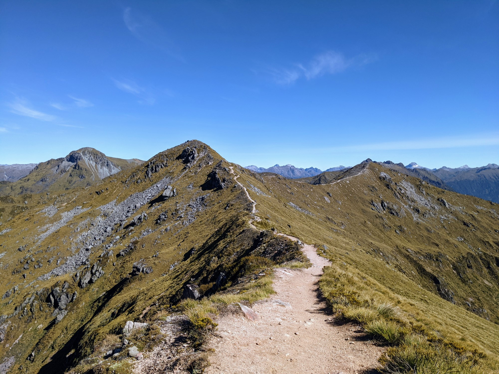
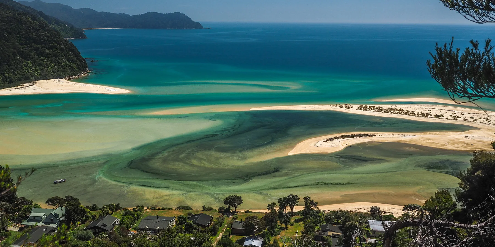

A closer look at the trails, huts, and views that make these walks worth the boots.

Milford Track — Fiordland National Park

Kepler Track — Views above Lake Manapouri

Abel Tasman Coast Track — Golden sand, native bush